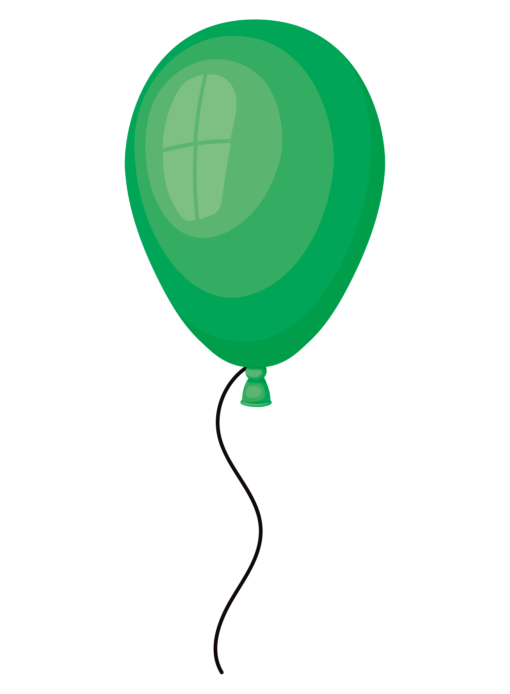

POPP

Nwhat's poppin in your neighborhood?
Find your perfect spot to read, work, hang, or just vibe, right now.
No account needed to look around

Nwhat's poppin in your neighborhood?
Find your perfect spot to read, work, hang, or just vibe, right now.
No account needed to look around